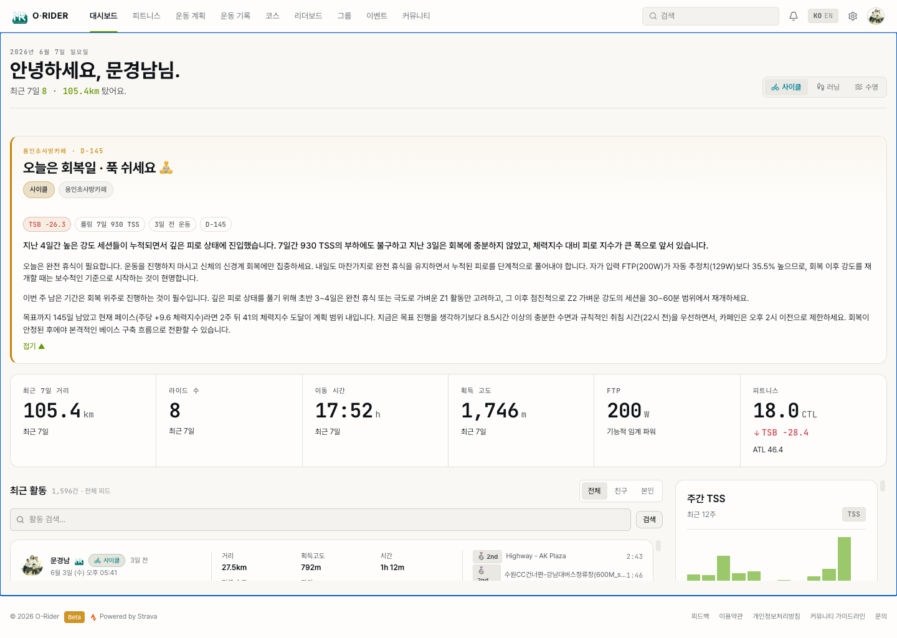

1. 웹 시작하기
이 섹션의 목적
오라이더 웹에 접속하여 내 라이딩 데이터를 볼 수 있는 상태를 만드는 것. 로그인을 완료하면 앱에서 기록한 모든 라이딩이 웹에 자동으로 표시됩니다.

1.1 앱과 웹 — 역할이 다르다
오라이더 앱과 웹은 같은 데이터를 다루지만, 사용 시점과 목적이 완전히 다릅니다.
| 앱 (모바일) | 웹 (브라우저) | |
|---|---|---|
| 언제 | 라이딩 중 | 라이딩 이후 |
| 역할 | 기록하는 도구 | 분석하는 도구 |
| 핵심 질문 | "지금 속도가 몇이지?" | "이번 주에 충분히 탔는가?" |
| 화면 | 스마트폰 (주행 중 한눈에) | PC/태블릿 (큰 화면에서 분석) |
앱에서 기록하고, 웹에서 분석한다 — 이 흐름을 기억하세요. 웹은 라이딩 도중 사용하는 도구가 아닙니다.
1.2 접속과 로그인
확인할 것
orider.co.kr에 접속하면 대시보드가 표시됩니다. 비로그인 상태에서는 다른 라이더들의 전체 공개 활동이 피드에 보이고, 상단에는 "Google로 시작하기" 안내가 표시됩니다. 내 기록과 주간 통계는 로그인 후에 나타납니다.
해야 할 것
오른쪽 상단 "Google 로그인" 클릭
→
Google 계정 선택
→
대시보드에 내 데이터 표시
결과
로그인이 완료되면 앱에서 기록한 모든 라이딩 활동이 대시보드에 표시됩니다. 처음 로그인하면 프로필이 자동 생성됩니다.
반드시 앱과 같은 Google 계정으로 로그인해야 합니다. 다른 계정으로 로그인하면 빈 대시보드가 표시됩니다.
1.3 웹이 답하는 질문들
웹에서 무엇을 할 수 있는지를 메뉴 목록이 아니라, 라이딩 이후 자연스럽게 떠오르는 질문으로 이해하세요.
| 라이딩 후 궁금한 것 | 웹에서 확인하는 곳 | 이 매뉴얼 |
|---|---|---|
| "이번 주에 얼마나 탔지?" | 대시보드 → 최근 7일 요약 | 2장 |
| "오늘 라이딩이 어땠지?" | 활동 상세 → 지도, 고도, 분석 탭 | 3장 |
| "이 오르막에서 나는 몇 등이지?" | 리더보드 → 세그먼트 순위 | 4장 |
| "우리 동호회가 이번 주에 얼마나 탔지?" | 그룹 → 대시보드 | 5장 |
| "내 체력이 올라가고 있는 건가?" | 피트니스 → 점수, 파워 커브 | 6장 |
결과
처음에는 2장(기록 확인)과 3장(상세 분석)만으로 충분합니다. 데이터가 쌓이고 궁금한 것이 늘면 4~6장으로 자연스럽게 넘어갑니다.
1.4 첫 로그인 후 초기 설정 (온보딩)
Google 계정으로 처음 로그인하면 3단계 온보딩 화면이 초기 설정을 안내합니다. 상단 진행 막대로 현재 단계를 확인할 수 있습니다.
① 주 종목 선택
→
② Strava 연동
→
③ 목표 설정
| 단계 | 내용 | 건너뛰기 |
|---|---|---|
| ① 종목 | 철인3종 · 자전거 · 러닝 · 수영 중 주로 하는 종목을 하나 고릅니다. 선택한 종목에 맞춰 대시보드가 구성됩니다. | 필수 (선택해야 다음 진행) |
| ② Strava | Strava 연동을 누르면 설정 화면으로 이동해 계정을 연결합니다. 연동하면 기존 활동이 자동으로 들어옵니다. | "나중에" 가능 |
| ③ 목표 | 목표 설정하기를 누르면 목표 설정 위저드로 이동합니다. | "나중에" 가능 |
Strava 연동과 목표 설정은 건너뛰어도 됩니다. 나중에 설정과 운동 계획 메뉴에서 언제든 다시 할 수 있습니다.
결과
모든 단계를 마치면 홈 화면으로 이동하고, 선택한 종목 기준으로 대시보드가 표시됩니다.